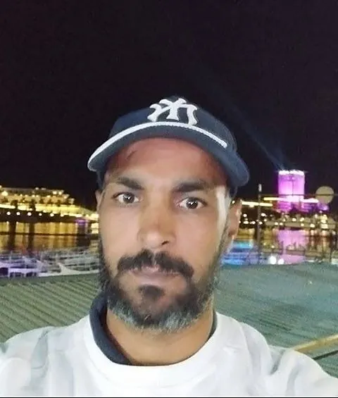
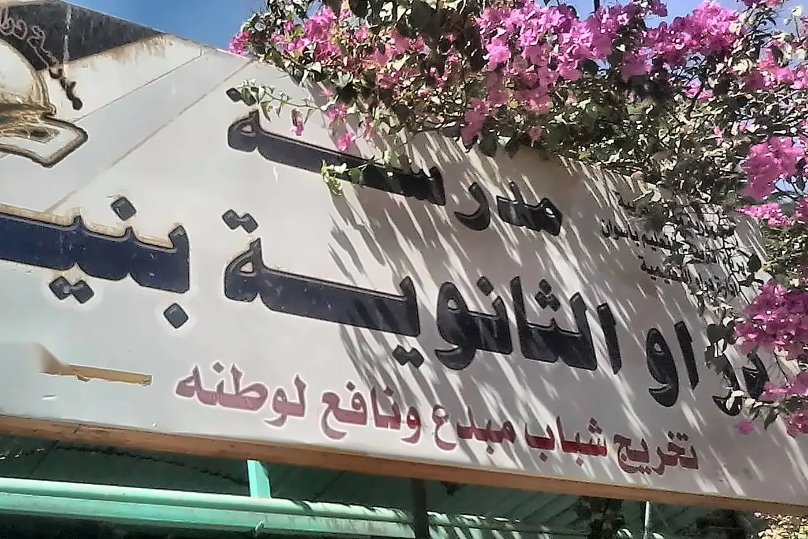
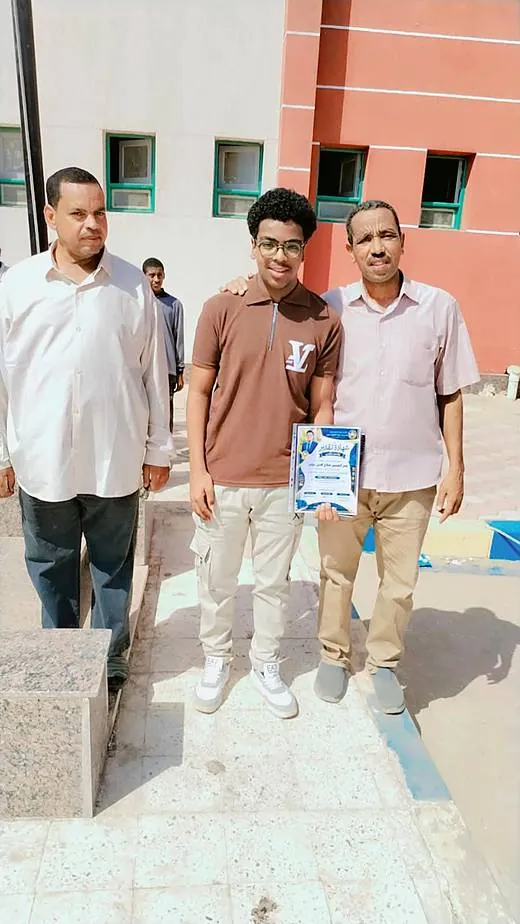
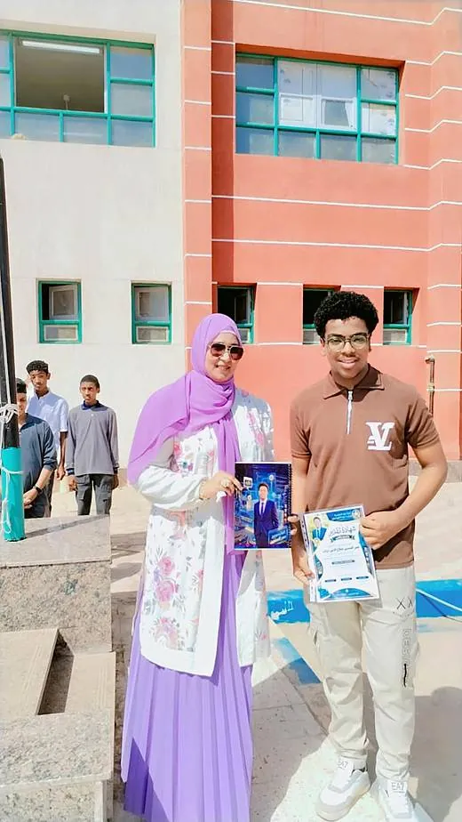
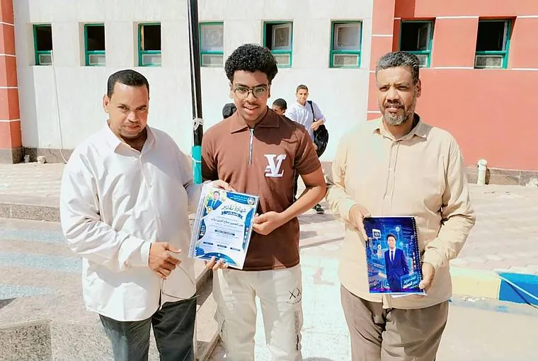
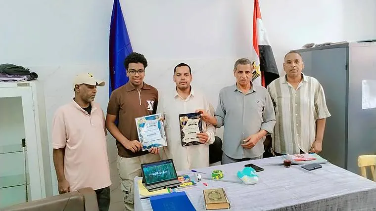
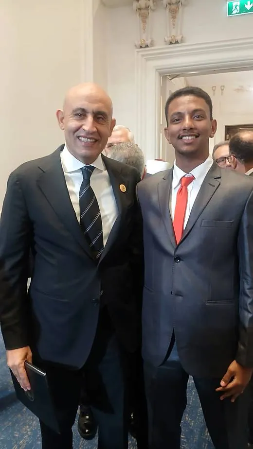
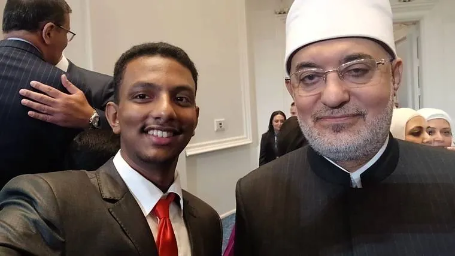
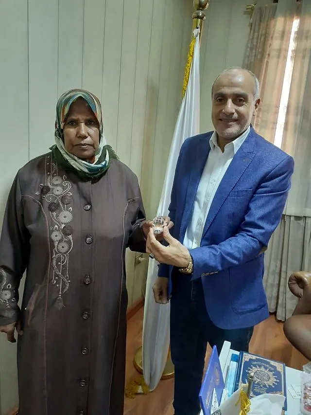

تطوير التعليم
تقديم بيئة تعليمية جاذبة ومتطورة تعتمد على الرقمنة والأساليب الحديثة لتنمية مهارات التفكير والابتكار.
نبني جيلًا
خمسة التزامات لتحقيق رؤيتنا.
الريادة في بناء جيل من الشباب المبدع، والمتميز علمياً وأخلاقياً، والقادر على مواكبة التحول الرقمي والمنافسة العالمية بما يخدم مجتمعه ووطنه.


معلمو المدرسة.
آخر ما يخص مدرستنا وطلابنا.
تفخر مدرسة دراو الثانوية بنين بإنجازات ابنها المتميز عمر، الذي استطاع توظيف ما تعلّمه في البرمجة في تنفيذ مشروع رقمي يعكس إبداعه ومهاراته التقنية، ليكون نموذجًا مشرفًا للطلاب الموهوبين والمبدعين.






في حضورٍ يعكس تميّز أبناء المدرسة، التقى الطالب أحمد أسامة كيكي، أمين المدارس بمحافظة أسوان، بالدكتور محمد عبد اللطيف، وزير التربية والتعليم والتعليم الفني، والدكتور مصطفى مدبولي، رئيس مجلس الوزراء، وذلك خلال فعالية بمدينة العلمين الجديدة. تفخر المدرسة بأبنائها المتميزين، وتتمنى لهم دوام النجاح والتوفيق.

تسليم دبوس الاتحاد للأستاذة سحر، الأخصائية الاجتماعية بالمدرسة، تقديرًا لكون أمين اتحاد الطلاب بمدرستنا ممثلًا للطلاب على مستوى المديرية.
أداة صغيرة للطلاب، لأن رؤيتنا مواكبة التحول الرقمي.
المزيد من الصور والفعاليات على صفحة المدرسة في فيسبوك.
اكتب اقتراحك أو ملاحظتك عن المدرسة أو الموقع.
دراو، أسوان.